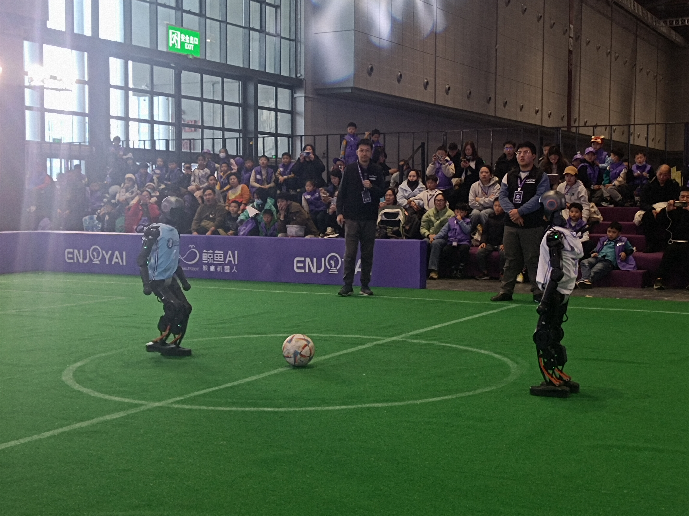
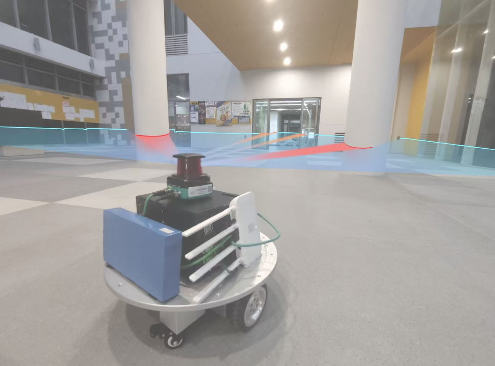
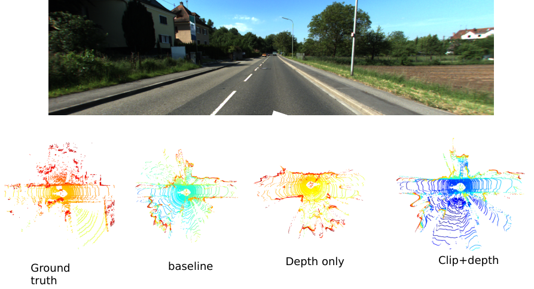
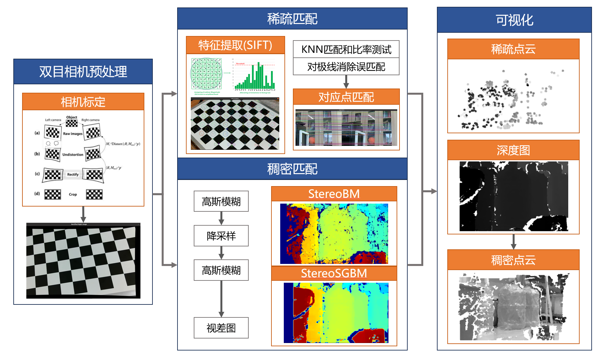
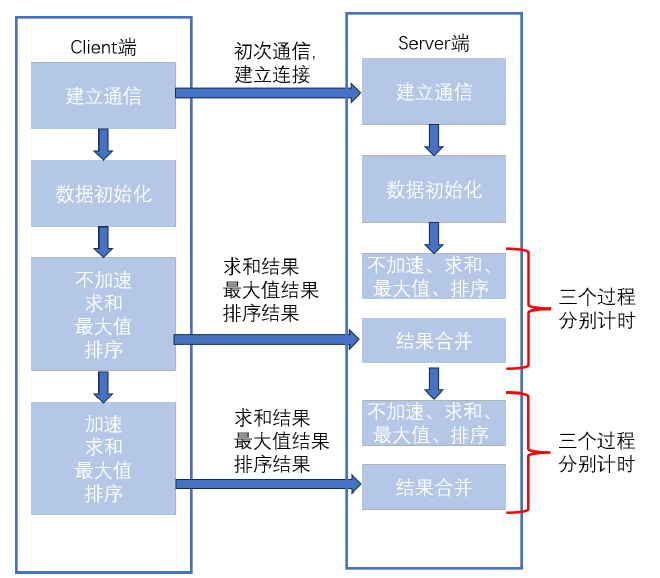
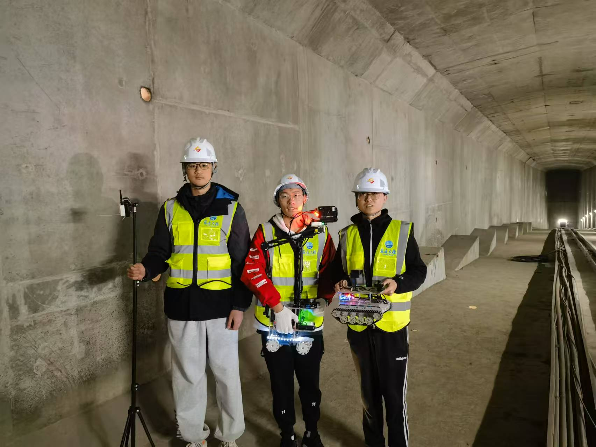
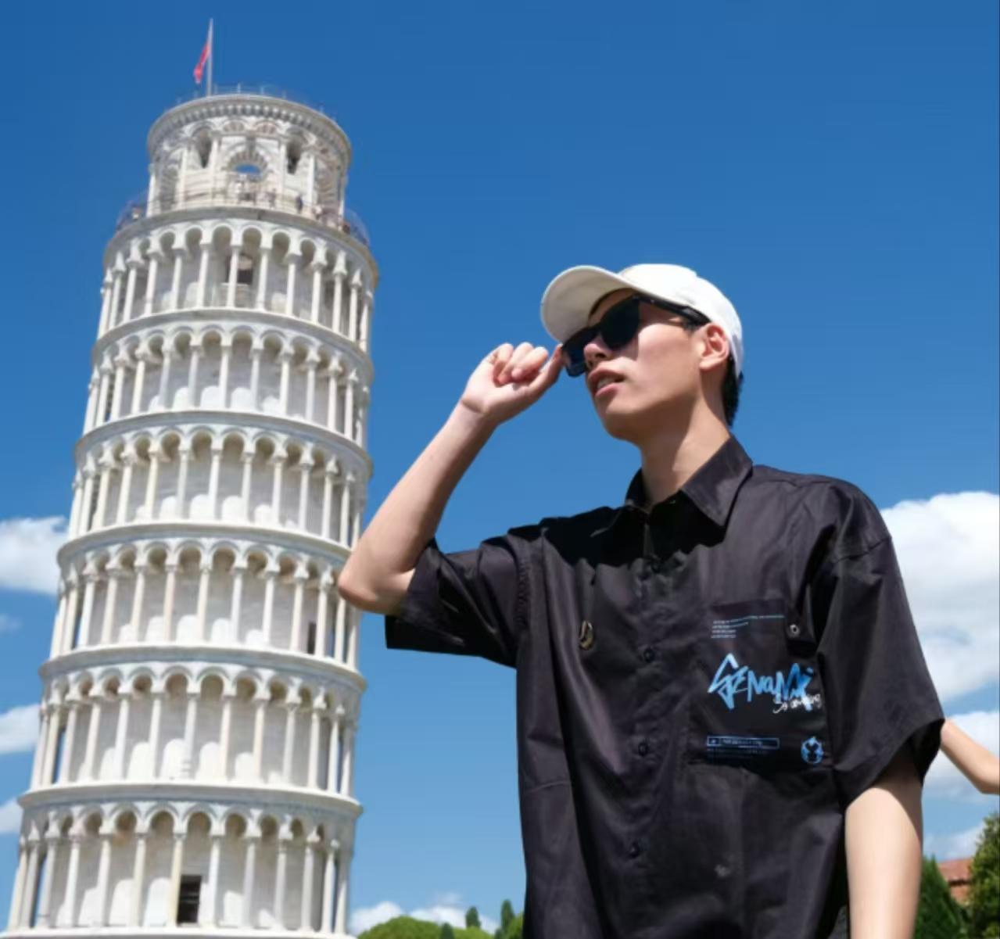

|
Yujie Cui [崔屿杰] Hi! I'm Yujie Cui, an undergraduate at Tongji University majoring in Automation, working in the RAIL Lab with Prof. Qijun Chen and Prof. Chengju Liu. Before my second year, I studied Civil Engineering and worked with Prof. Dalei Wang and Assoc. Prof. Yue Pan on civil engineering robotics research. |

|
ResearchI'm interested in robotics, machine learning, generate AI and computer vision. The following research experiences are listed in chronological order. Some projects are highlighted. |

|
Three-Fingered Dexterous Hand Universal Manipulation Interface
The project is under development. |
|  |
Booster Robotics Humanoid RoboCup Soccer Tournament
Using UDP broadcast and ROS2 for robot coordination in ball searching and offense-defense, with PyQt visualizing positions and ball detection. Programming a behavior tree for adaptive path and speed adjustments based on target positions, with obstacle detection for avoidance. |
|  |
Self-Supervised Laser Scan Weight Prediction
Paper in Progress |
|  |
Diffusion-based 3D LiDAR Point Cloud Generation
Introduced geometry-based constraints in the first-stage point cloud encoding of the Diffusion model to enhance feature representation. Used the Depth-Anything model in the second stage for depth estimation, improving image-guided point cloud generation. code |

|
STM32H7 based Aphasia Helper
An STM32H7-based assistive device for aphasia patients. Core Technology: Human-computer interaction and Edge AI. Award: Second Prize in National College Student Embedded System Design Competition code / project report |

|
Infrared based Gesture Recognition
This project to design a gesture recognizer based on STM32G0 and infrared reflection sensors.Using the K-means algorithm to distinguish between rock, paper, and scissors gestures. Core Technology: PCB Design & Soldering, K-means. code / project report |
|  |
Stereo Matching and Point Cloud Imaging
Stereo Matching and Point Cloud Generation Based on Stereo Cameras. Core Technology: Stereo Calibration, Feature Matching, Disparity & Depth Map and Sparse & Dense Point Cloud Generation. code / project report |
|  |
Dual System (Windows + Linux) Parallel Computing
This project implements communication and parallel computing between the server on a Linux system and the client on a Windows system. Core Technology: OpenMP, SEE Acceleration and TCP Communication. code / project report |
|  |
A smart robotic system for autonomous inspection of large-scale concrete girder
Yujie Cui, Yue Pan, Dalei Wang, Mazeyu Ji, Sugong Cao Bridge Maintenance, Safety, Management, Digitalization and Sustainability (IABMAS), 2024 Award: Three National Innovation and Entrepreneurship Competition Awards.(CV for details) project website / paper |

|
Adaptive Denoising-Enhanced LiDAR Odometry for Degeneration Resilience in Diverse Terrains
Mazeyu Ji, Wenbo Shi, Yujie Cui, Chengju Liu, Qijun Chen IEEE Transactions on Instrumentation and Measurement, 2024 paper / IEEE / code |
MiscI'm interested in swimming, playing single-player games and traveling.  |
|
Designed and sourced code based on Jon Barron's website. |